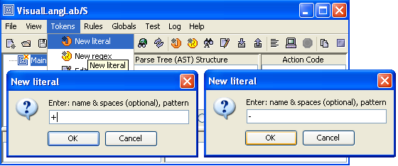
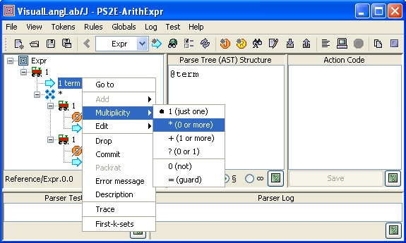
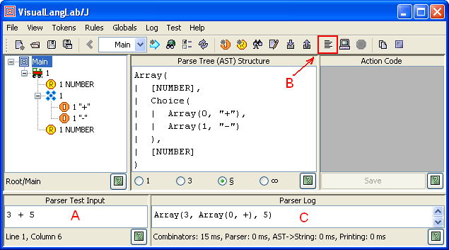

Figure 1. VisualLangLab's grammar-trees
| This is a periodically revised version of an article submitted
for publication on the java.net website in August 2011.
These revisions keep the contents compatible with the current version of
VisualLangLab A history of the revisions can be seen here. |
In the world of computing a grammar is a somewhat different thing from the object implied in grammar without tears. But in terms of the misery caused to those who have to deal with them, the two grammars appear to be closely related. This article describes a no tears approach to parser development using the free, open-source parser-generator VisualLangLab. It has an IDE that represents grammar rules (or productions) as intuitive trees, like those in Figure-1 below, without code or scripts of any kind.
Figure 1. VisualLangLab's grammar-trees
The grammar-trees are also executable, and can be run directly at the click of a button. This encourages the use of tight iterative-incremental development cycles, and improves the pace of development manyfold. These features also make it an effective prototyping environment and a training tool.
VisualLangLab is itself written in Scala, a JVM language that supports object-orientation as well as functional-programming, but you don't have to know much Scala to use VisualLangLab.
Parsing techniques and parser-generator tools are a great addition to any developer's arsenal, and VisualLangLab provides a convenient, gentle introduction to those topics. A later article will describe the use of VisualLangLab to produce a domain specific language or DSL for testing Java-Swing programs.
As a now-famous panda discovered, powerful recipes sometimes have no secret ingredient. And there is no generated code.
VisualLangLab uses Scala's parser combinator functions to turn grammar-trees (or XML from a saved grammar-file) directly into a parser at run-time without producing or compiling source-code. But users of the GUI and the API do not have to know anything about combinators to use these capabilities.
The VisualLangLab web-site has a zip file that includes everything you need. The only prerequisite is a 1.6+ JDK or JRE. To run the tool, proceed as follows.
A Scala installation is not a mandatory prerequisite. If you do not have Scala (or just want to avoid version issues), download the executable JAR file VLLS-All.jar (which bundles the required Scala libraries). VisualLangLab is started by double-clicking VLLS-All.jar in a file browser, or by issuing the following command at a system prompt:
java -jar VLL-All.jar
Linux or UNIX users will, of course, have to enable execution (chmod +x ...)
to have it start by double-clicking.
To run VisualLangLab with your installed version of Scala
use one of the launchers included in the zip file
(vlls.bat for Windows, vlls for Linux).
Linux or UNIX users will need to enable execution (chmod +x ...)
of the launcher script.
When started, VisualLangLab displays the GUI shown in Figure-2 below. The article explains the menus and buttons as needed, but a full description can also be found online at The GUI and in the download zip. All toolbar buttons have tool-tip texts that explain their use.
Figure 2. The VisualLangLab GUI
The graphical and text panels are used as described below.
The following sections are a tutorial introduction that lead you through the steps of creating a simple parser.
There are two kinds of token, literal and regex, that the following discussion and examples will help you differentiate. We create 2 literals and 1 regex that are used in a rule later.
To create a literal token select Tokens -> New literal from the main menu as in Figure-3 below. Enter the literal's name (PLUS), a comma, and the pattern (+) into the popped up dialog box and click the OK button. A token's name is used to refer to it from rules, while the pattern describes its contents. All instances of a particular literal token (during the parser's run) have the same fixed content.
Now create another literal token named MINUS with a - pattern (as in the second dialog box in Figure-3).

Figure 3. Creating a literal token
Figure-4 below shows how you can create a regex token. Select Tokens -> New regex from the main menu, and enter the token's name (NUMBER), a comma, and the pattern (\\d+) into the dialog box and click OK. You probably recognize the pattern as a Java regular-expression that matches numbers.
Figure 4. Creating a regex token
Observe that the pattern part in the dialogs above (for literal as well as regex tokens) should be written exactly as if they were inside a String in a Java program (without the surrounding quote marks).
There is not a great deal more to tokens, but if you would like to read the fine print, check out the last part of Editing the Grammar Tree.
The main menu and toolbar also support several other operations. You can find which rules use any particular token (Tokens -> Find token), edit tokens (Tokens -> Edit token), and delete unused tokens (Tokens -> Delete token).
Tokens tend to be reused within application domains, so VisualLangLab allows you to create and use token libraries. These operations are invoked from the main menu by selecting Tokens -> Import tokens and Tokens -> Export tokens, or by using corresponding toolbar buttons.
You can specify the character patterns that separate adjacent tokens by invoking Globals -> Whitespace from the main menu, and entering a regular expression into the popped up dialog box. The default whitespace specification is "\\s+".
You can also provide a regular expression for recognizing comments in the input text. Select Globals -> Comment from the main menu, and enter a regular expression into the dialog box. There is no default value for this parameter.
VisualLangLab represents rules as grammar-trees with distinctive icons (as in Figure-1 above) and a context-sensitive popup-menu. This graphical depiction makes grammars comprehensible to a wider range of users. The icons and textual annotations used in the grammar-trees are described below.
The table below lists the icons from which grammar-trees are constructed.
| Non-terminals | |
 | Root - used for the root node of every grammar tree |
 | Choice - used as the parent of a group of alternative items (any one of which occurs in the input) |
 | Sequence - used as the parent of a sequence of items which occur in the order specified |
 | RepSep - parent of a sequence of similar items that also uses a specified separator |
 | Reference - invokes another named parser |
| Semantic predicate - succeeds or fails depending on the run-time value of an expression | |
| Terminals | |
 | Literal - matches a specified literal token |
| Regexp - matches a specified regex token | |
| Icon overlays | |
 | Commit - displayed on top of a node that has the commit annotation |
| Error: indicates an error in the associated node or rule | |
Each grammar-tree node has characteristics (such as multiplicity) that are represented as the node's annotations, and are displayed as text beside each node's icon. You can change a node's annotations by right-clicking the node and choosing the required settings from the context-menu as in Figure-5 below.

Figure 5. Setting node annotations
The first annotation is a 1-character flag that indicates the node's multiplicity -- the number of times the corresponding entity may occur in the parser's input. You can see examples of its use everywhere in the built-in Sample Grammars. Multiplicity has one of the following values:
Note: Observe that the last two values ("0" and "=") are actually commonly required syntactic predicates and have no influence on the structure of the AST. The names not and guard are inspired by functions of the same name and function in Scala's Parsers.
The second annotation is the name of the entity. The value displayed depends on the type of the node as described below.
All icons have at least the two annotations described above. All other annotations, described below, are optional. If any of the optional annotations are present, they are enclosed within square brackets.
All node attributes can be reviewed and changed via the context-menu as shown in Figure-5 above.
The grammar-tree popup menu is the tool used for creating and editing grammar-trees, and is described fully in Editing the Grammar Tree. In the following example we get our feet just a little wet by composing a simple rule with the tokens we created above.
First, add a Sequence node to the grammar-tree by right-clicking the root node
() and selecting
Add -> Sequence from the popup menu as shown on the left side of Figure-6 below.
A sequence icon
() is added to the root,
as on the right of the figure.

Figure 6. Adding a sequence node
Then perform the following steps:
) and select Add -> Token.
This will bring up a dialog containing a list of token names.
Select NUMBER and click the dialog's OK button.
A regex icon () is added
to the sequence node)
to the sequence node)
and select Add -> Token.
Select PLUS in the dialog box and click OK.
A literal icon ()
is added to the choice node.
Repeat this action once more, and add the MUNUS token to the choice nodeYou're done! If your parser does not look like the one in Figure-7 below, use Edit from the grammar-tree's context menu to make the required changes.

Figure 7. Your first visual parser
The text displayed in the panel to the right of the grammar-tree is the AST of the selected node, and so depends on which icon you clicked last.
The main menu and toolbar also support several other operations. You can find which other rules refer any particular rule (Rules -> Find rule), rename rules (Rules -> Rename rule), and delete unused rules (Rules -> Delete rule).
A grammar can be saved to a file by invoking File -> Save from the main menu. Grammars are stored in XML files with a .vll suffix. The contained XML captures the structure of the rules, the token definitions, and other details, but no generated code of any kind. The XML is quite intuitive and you can use XSLT or a similar technology to transform it into another format (a grammar for another tool, or code of some sort, for example) if required.
A saved grammar can be read back into the GUI by invoking File -> Open from the main menu. This is useful for review, further editing, or testing. The API can also load a saved grammar, and regenerate the parser for use from a client program.
Testing is really simple. Key in the test input under Parser Test Input (as at "A" in Figure-8 below), click the Parse input button (under the red rectangle), and validate the output that appears under Parser Log (at "C" in the figure). You don't have to write any code, use any other tools, or do anything else.

Figure 8. Testing your parser
The figure shows the result of testing the parser with "3 + 5" as the input. The Parser Log are should contain the following text:
Generating parsers ... (10 ms)
Parsing ... (3 chars in 0 ms), result follows:
Array(3, Pair(0, +), 5)The first two lines contain performance information that is safely ignored. The last line (underlined) is the parser's result. The result is an AST with a predefined structure shown under Parse Tree (AST) Structure. Since the test input entered was "3 + 5", we know that the result is correct. However, real-life parsers are too complex for manual testing, so VisualLangLab supports several approaches to automated testing that are described online in Testing Parsers.
That brings us to the end of this quick example. If you feel that the result of
parsing "3 + 5" should be 8 instead of Array(3,Pair(0,+),5) check out
the section ArithExpr with action-code in
Sample Grammars.
The terms parse-tree and Abstract Syntax Tree (or just AST) are used interchangeably to mean the structure of information gathered during the parsing process. VisualLangLab displays the AST of the selected grammar-tree node in the text area under Parse Tree (AST) Structure as seen in Figure-7 above. ASTs are constructed from mutually nested instances of certain standard Scala types, so a rudimentary understanding of their main features is useful. Examples and more details can be found online at AST and Action Code or in the downloaded zip.
Action-code (or just actions) are Scala or Javascript functions associated with grammar-tree nodes, and entered into the text area under Action Code ("C" in Figure-2 above). It is never necessary to have action code embedded in the grammar — you can always remove all code into an application program that invokes the parser via the API, and then processes the AST returned by it. You can see examples of action-code in the ArithExpr with action-code sample grammar, and more details can be found online at AST and Action Code or in the downloaded zip.
The VisualLangLab API enables applications written in Scala (and Java with some awkwardness) to use parsers created with the GUI. The API is very small, and contains the types and functions required to perform the following operations.
More details and examples can be found online at Using the API.
To enable users to quickly gain hands-on experience with VisualLangLab grammars, the tool contains some built-in sample grammars. These samples can be reviewed, tested, modified, and saved just like any other grammar created from scratch. To open a sample grammar select Help -> Sample grammars from the main menu, and choose one of the samples shown as in Figure-9 below.
Figure 9. Sample grammars available
More information about these samples can be found online at Sample Grammars or in the downloaded zip file.
The class diagram in Figure-10 below shows VisualLangLab's relationship with Scala's parser combinators.

Figure 10. Relationship With Scala parser combinators
However, the tool's classes override and augment a few key functionalities of the underlying Scala classes, so the behavior and AST of VisualLangLab's parsers is significantly different in certain ways.
literal() and regex() methods~ and | combinators internally, but have different return typesMore details can be found online at Relationship with Scala Parser Combinators, or in the downloaded zip.
The article introduces readers to parser development using the completely visual tool VisualLangLab. Its features make it an effective prototyping environment and a training tool, and will hopefully be a useful addition to any developer's skills.
| Revision History |
|---|
|
|